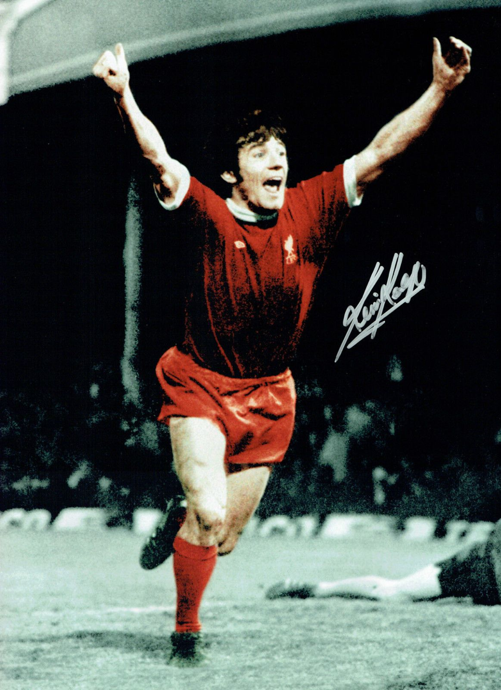

Kevin Keegan
Joseph Kevin Keegan was a Yorkshire born forward for Liverpool FC from 1971 to 1977. After Bill Shankly signed him for £35,000, in his astounding career, Kevin Keegan had amassed 100 goals for the club. His brilliance has won him 3 First Division titles, 2 UEFA Cup winner's medals, 1 European Cup winner's medal and the FA Cup.
Kenny Dalglish
Kenny Dalglish MBE was a Glasgow born legend at the club. As a forward his amazing 14 year long career began in 1977 after replacing Keegan. In his immensely successful Liverpool career he had made 515 appearances, from which he scored a massive 172 goals. His success has won him 8 league titles, 3 European Cups, 2 UEFA Super Cups and 3 FA Cups. In 1990 he became player-manager for Liverpool, after which his success continued to blossom as a manager, winning titles and trophies.
Ian Rush
Ian James Rush MBE, from Wales is a former striker for Liverpool FC. His LFC career, which spanned 16 years, began in 1980. He is the club's all-time leading goalscorer, having scored a breathtaking 346 goals in all competitions in 660 appearances. His Liverpool success won him 'Player Of The Year - 1984', plus 5 League Championships, 2 European Cup Championships, 5 League Cup Winner's Medals and 3 FA Cup Winner's Medals.

Steven Gerrard
Steven Gerrard MBE is a true Liverpool born legend and one of the most iconic. No other Liverpool player had the passion and determiniation he possessed, which drove him to become one of the very best in the world at what he did. It is why he is still loved and respected among millions and regarded as one of the top players in football history. He started his impressive Anfield career in 1998 at the tender age of 17 years. In his illustrious career as a midfielder he had made a staggering 710 appearances and scored an astonishing 186 times, which would be a huge acheivement in itself for a forward player. In the 2000-2001 Season he was voted 'PFA Young Player of the Year' and helped Liverpool bring home the FA Cup, EUFA Cup and League Cup. Yet Gerrard will be remembered mostly for his contribution in securing the 2005 UEFA Champions League Trophy, when he aided a second leg fight back against AC Milan, which resulted in a win for Liverpool after a nail-biting penalty shootout. His efforts also won him the 'UEFA Club Footballer of the Year'. In his amazing 17 year Liverpool career he had brought home nine trophies, including the UEFA Champions League, 2 FA Cups, and 3 League Cups.